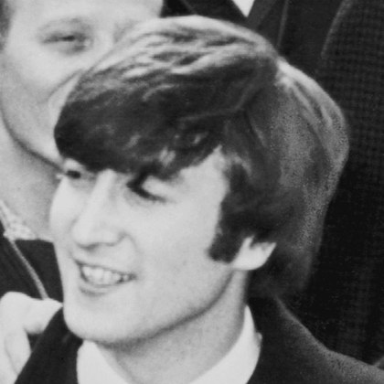

Содержание

Весной 1956 года Джон Леннон вместе с товарищами по школе основал группу «The Blackjacks», через неделю переименованную в «The Quarrymen» — по названию школы, в которой они учились. Летом 1957 года Леннон познакомился с 15-летним Полом Маккартни, и вскоре Пол вошёл в состав группы.
В начале 1958 года Маккартни привёл в группу своего младшего друга Джорджа Харрисона. Именно эти трое стали основой будущих The Beatles. В 1960 году к ним присоединился друг Леннона по художественному колледжу Стюарт Сатклифф, который стал играть на бас-гитаре.

Группа несколько раз меняла название: «Johnny and the Moondogs», «The Silver Beetles» и, наконец, в августе 1960 года — «The Beatles». Название придумали по примеру американской группы «The Crickets» («Сверчки»): слово beetles означает «жуки», а буквы «ea» напоминают о стиле музыки «бит» (beat).
В августе 1960 года группа с новым барабанщиком Питом Бестом впервые отправилась в Гамбург (Германия). Музыканты выступали в клубах почти каждый вечер по несколько часов подряд — так они научились держаться на сцене и хорошо сыгрались.
Вернувшись в Ливерпуль, The Beatles с 1961 года постоянно выступали в клубе «Каверн». За два с половиной года они сыграли там почти 300 концертов и стали самой известной группой города.

В конце 1961 года менеджером группы стал владелец музыкального магазина Брайан Эпстайн. В 1962 году продюсер Джордж Мартин подписал с The Beatles контракт со студией звукозаписи Parlophone (компания EMI). Летом того же года место барабанщика занял Ринго Старр.
В октябре 1962 года вышел первый сингл «Love Me Do», а уже в 1963 году в Великобритании началась «битломания». В феврале 1964 года выступление группы на американском телевидении посмотрели около 73 миллионов зрителей.

В 1968 году группа выпустила двойной альбом «The Beatles», который из-за полностью белой обложки называют «Белым альбомом». В него вошли 30 песен, многие из которых были написаны во время поездки музыкантов в Индию весной 1968 года. В том же году участники основали собственную компанию Apple.

В 1969 году вышел альбом «Abbey Road» — последний, который музыканты записали все вместе. Его обложка, на которой четверо участников переходят улицу по пешеходному переходу, стала одной из самых известных в истории музыки.
В апреле 1970 года Пол Маккартни объявил, что покидает группу. В мае того же года вышел последний альбом «Let It Be». После распада каждый из участников начал сольную карьеру, а песни The Beatles до сих пор слушают во всём мире.